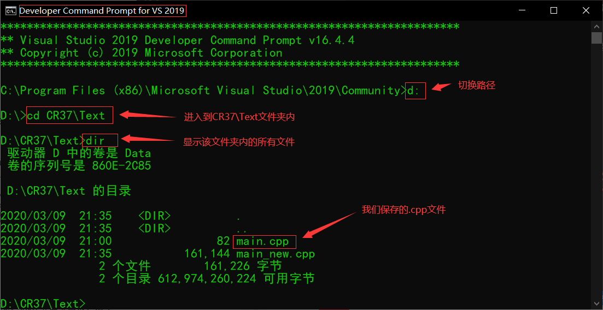
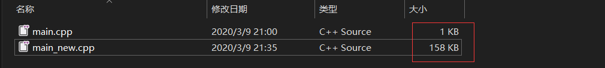
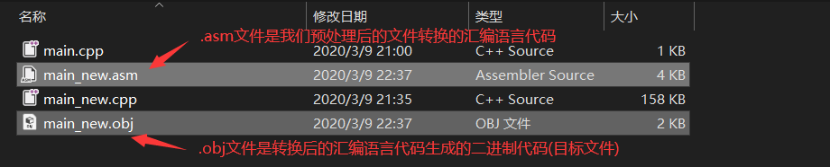
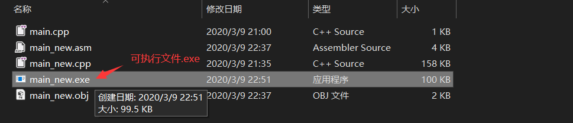
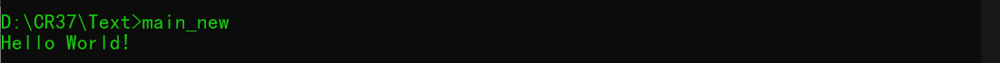

编写示例代码
作为程序员我们需要了解我们编写的源程序是如何成为可执行文件，不能只会使用集成开发环境来完成这个过程。下面我就手动实现一下C语言的预处理、编译和链接这三个过程。
先用记事本写下下面几行代码并保存到计算机的磁盘内：
1 | |
然后我们需要单击我们windows系统左下角的开始按钮，并找到Visual Studio 2019程序组内的eveloper Command Prompt for VS 2019程序，然后鼠标单击打开，并进入到我们刚才保存的.cpp文件夹内，如下图所示：

预处理
可以理解成，编译之前对源文件进行简单加工的过程，在eveloper Command Prompt for VS 2019中执行先下面的命令：
1 | |

可以看出新生成文件的大小要比源文件大许多，这是因为新的文件引入了头文件
的内容，并进行了其他的处理。我们可以打开新生成的文件查看下。
编译
这个过程就是将我们刚才对源文件进行预处理后生成的新文件进行编译，使其生成目标文件，在eveloper Command Prompt for VS 2019中执行先下面的命令：
1 | |

链接
此时，生成的这三个文件还不能运行，我们还需要将函数库的二进制代码与目标文件合并到一起，形成一个可执行文件。
在eveloper Command Prompt for VS 2019中执行先下面的命令：
1 | |

最后在eveloper Command Prompt for VS 2019中执行先下面的命令就可以运行该程序：
1 | |
运行结果：
